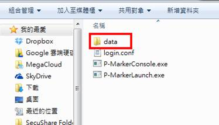
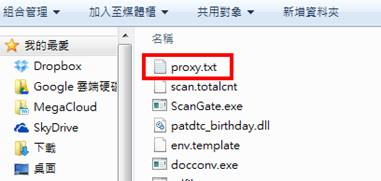

(1) 開啟 P-Marker 主程式資料夾中的「data」資料夾。

(2) 在「data」資料夾中，新增一個「proxy.txt」文字檔案。

(3) 打開 proxy.txt，第一行填入 proxy 的主機位址 ( IP ) 及埠號 (Port)，其間以冒號隔開，如：10.0.0.123:3128。
註：請注意以半形英數字符號輸入，全部內容不應有任何的空白或指定之外的文字。
(4) 若 proxy server需要帳號密碼認證，請在 proxy.txt 的第二行輸入帳號，第三行輸入密碼。
當上述步驟設定完成後，管理者就可以利用這個 P-Marker 用戶端程式來進行盤點。